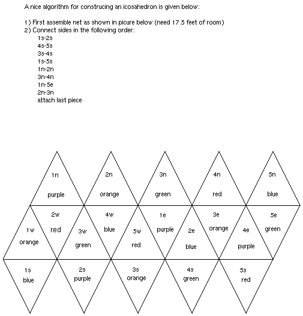

![[HOME]](icos_files/home.gif) The Geometry Center Home Page
The Geometry Center Home Page
geometry.pre-college, geometry.college, Mon, Aug 8 1994
Recently the Geometry Center was the construction site of the world's largest icosahedron. For those unfamiliar with an icosahedron, it is a twenty-sided polygon whose sides are equilateral triangles. This particular icosahedron was constructed with triangles whose sides are approximately 37 inches long. Sixth through eighth graders in a summer program run by the Special Projects Office of the University of Minnesota decorated the triangles.
Students worked in pairs decorating each of the triangles. They colored a two-inch border around the triangle and then put different mathematical objects and symbols in the interior. Some students sketched platonic solids and archimedian solids, others made their triangles into Sierpinski triangles, and some put in equations like Euler's formula (vertices + faces - edges = 2) or made the first few rows of Pascal's triangle.
There were five different colors chosen for the borders of the triangle. Since each vertex of an icosahedron is created by the intersection of five triangles, each vertex was surrounded by five colors. With this color scheme, every vertex was symmetric to every other vertex by a translation and a rotation.
Rick Wicklin, a postdoc at the Geometry Center, calculated that the polygon would be about 70 inches long from vertex to opposite vertex. He came up with this number after discovering that the length from vertex to opposing vertex of an icosahedron is equal to 5^(1/4)*w^(1/2)*s where w is the golden ratio and s is the length of the side of a triangle. When I asked him for some justification for this formula, Rick scrambled into his office and pulled out a sheet of paper with which he had done his work. On the paper he had left a note that said, "I have a very elegant proof of this result, but am unable to fit it in the margin." :-)
If anyone knows of the elegant proof that Rick discovered, maybe they should post a reply to this article. (I would have posted this in the puzzle section of the form, but I have yet to find an answer.)
A slightly easier puzzle is the following: Rick cut the equilateral triangles out of foam board that were 32 by 40 inches long. Why did he end up with triangles with side length of 37 inches?
Rick and Tracy Bibelnieks, an administrator in the Special Projects Office, got the idea for the project after reading an article in February's issue of FOCUS. The article mentioned that 4th and 5th graders in Maryland constructed the world's largest Rhombicosidodecahedron. In that polygon each side had a length of 13 inches. At the end of FOCUS article, there was a challenge daring others to try and better their record. Instead of simply constructing a larger one, Rick and Tracy choose to make a icosahedron of the same size. Since constructing a icosahedron as big as the rhombicosidodecahedron would require making sides of much greater length, they thought this would meet the posted challenge. The icosahedron also happens to be a symbol on the FOCUS magazine and there is talk of having the icosahedron near the MAA's booth at the Minnesota Mathfest.
Rick Wicklin also mentioned that an icosahedron with 12 inch triangular side is a good classroom model. The following diagram shows the order with which the icosahedron was put together, and the color scheme.

The Geometry Center Home Page
Comments to:
webmaster@www.geom.uiuc.edu
Created: August 9 1994 ---
Last modified: Jun 18 1996